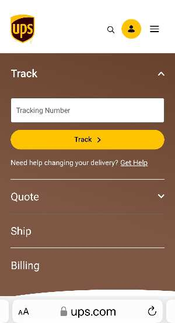

White Space
Ups- United Parcel Sevices
White space is the blanck area around, inside, or between the elements of design. In this case, the white space in this web page helps the user focus on the main elements of the page which are tracking shippments, get quote, ship somthing, and billing. It is its simplicity that makes this web page efective for the user.
PARC: Proximity
Living Spaces
href="https://www.livingspaces.com/">Proximity is the relationship between items on a page and site. Proximity is important to convey a message and purpose to the user. It deals with the placement of iteams and content on a page to establish the relative strength of a relationship between items. In this page the user finds images and some text description of groups of items that belong to specific categories. It makes for a more organized web site for better UX.
PARC: Repetition
Team Sidelines
href="https://go.teamsideline.com/">Repetition refers to properly repeating content and elements on a page to provide a sense of cohesive relationship between those elements.
In this web page you see a design that reapets its colors, fonts, navagation structures to create cohesiveness and makes for a better UX.